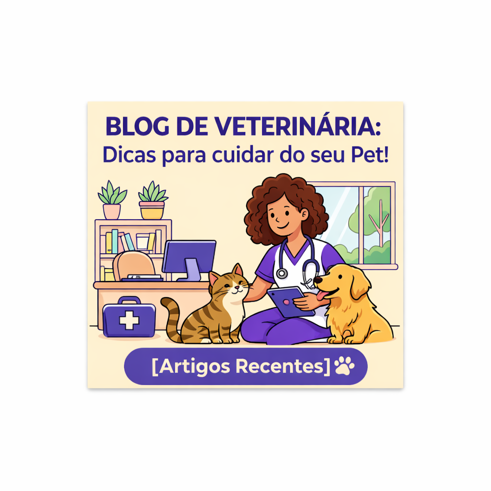
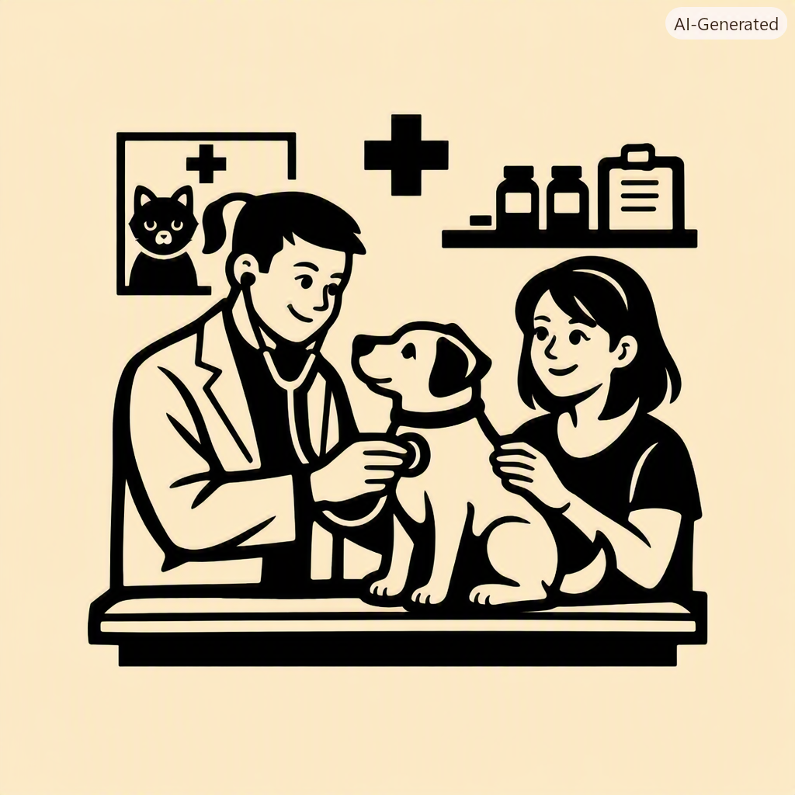
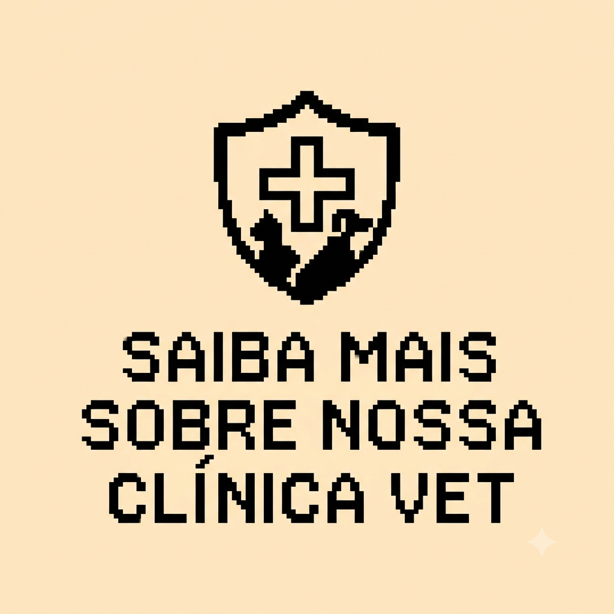

Minha primeira postagem de veterinaria
Yasmin CimasBoas vindas ao meu blog! Vou compartilhar curiosidades sobre Veterinaria.
Vou compartilhar alguns conhecimentos de veterinaria

Boas vindas ao meu blog! Vou compartilhar curiosidades sobre Veterinaria.

Por: Yasmin Cimas
A consulta veterinária é um momento essencial para garantir o bem-estar dos nossos animais de estimação. Nela, o veterinário avalia a saúde do pet, faz exames de rotina e orienta sobre cuidados preventivos, como vacinas e alimentação adequada. Além de tratar doenças, esse atendimento fortalece o vínculo entre o tutor e o profissional, promovendo uma vida mais saudável e feliz para o animal.

Na nossa clinica é um local especializado na prevenção, no diagnostico e no tratamento de doenças e lesões em animais de estimação e outros de pequeno ou grande porte.